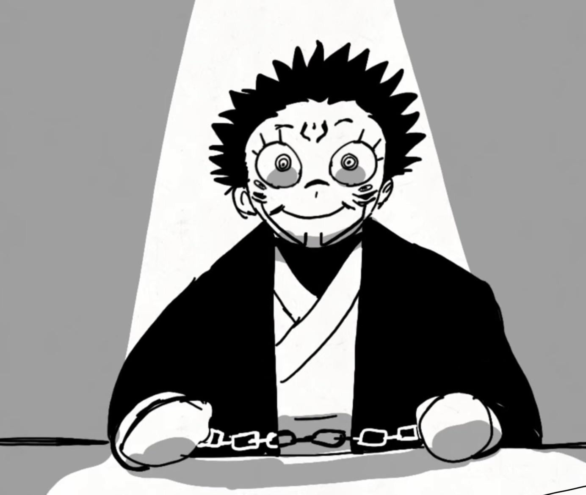

King of Curses has finally been captured by Glorious Blue-Eyed King
2018.Dec.24 | 10:46 AM | Tokyo Metropolitan Curse Technical College, Japan
Ryomen Sukuna who has been running wild since he got into a 16-year-old Fushiguro Megumi's body during the culling game, has recently been captured by Gojo Satoru himself.

credits:Mei Mei
Ryomen Sukuna, who has been turned into a cursed object after being defeated by a six-eyed user and an army of jujutsu sorcerers during the Heian era,
was eaten by Itadori Yuji in 2018 June in Sendai. Again in November (after Gojo Satoru was sealed ), during the culling game, this antian creature was able to
get into another teenager named Fushiguro Megumi.
Unlike Itadori, Fushiguro was unable to control Sukuna, so the situation was turned into a complete mess. However, on 18th November
Gojo Satoru finally got released thanks to his students, friends, etc. On 24th December, in Shijuku the King of Curses fought against our Glorious Blue-Eyed King.
After being defeated by Gojo Satoru, Ryomen Sukuna has taken to the TMCTC.
Currently, Sukuna is suffering from a few brain damages. Even Sukuna should have been executed as soon as possible since Itadori started yapping about Fushiguro,
and then everyone started arguing. For now, Meguna is alive.